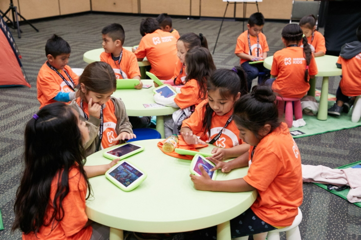
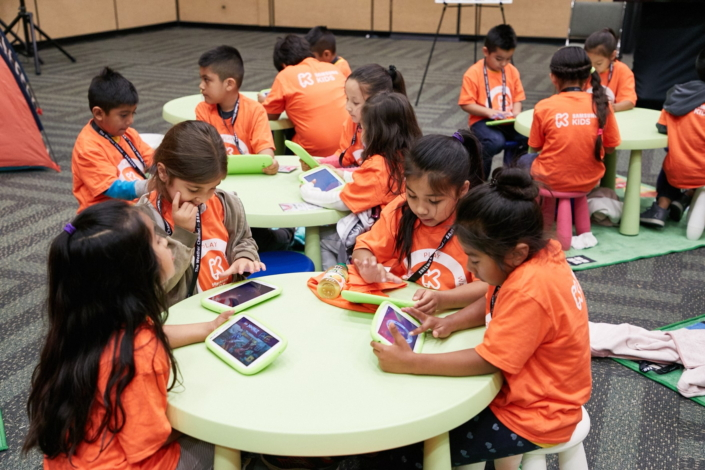

Website Purpose
This website was created as part of an Early Childhood Education assignment. Its goal is to explore the use of technology in Canadian classrooms, highlight family involvement, and discuss ways to balance digital learning with hands-on activities.
About the Author
[Your Name] – Early Child Care Educator Assistant student at Thompson Career College. Passionate about childhood development, education technology, and supporting families in nurturing children’s learning and growth.
 
